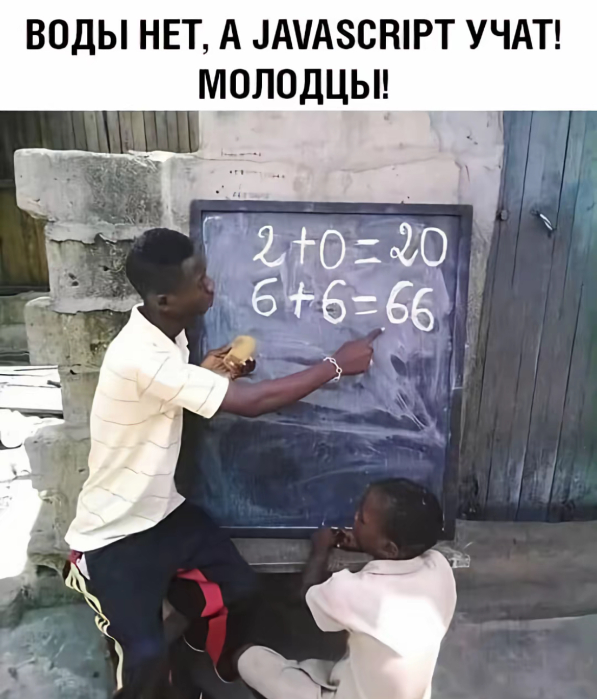

Изменение фильтра на изображении
Фильтр: none
Наведите мышку на картинку.
Чем мышь правее — тем сильнее эффект.
Удерживайте Ctrl для grayscale, Alt для sepia, Shift для hue-rotate.
Чем мышь правее — тем сильнее эффект.
Удерживайте Ctrl для grayscale, Alt для sepia, Shift для hue-rotate.